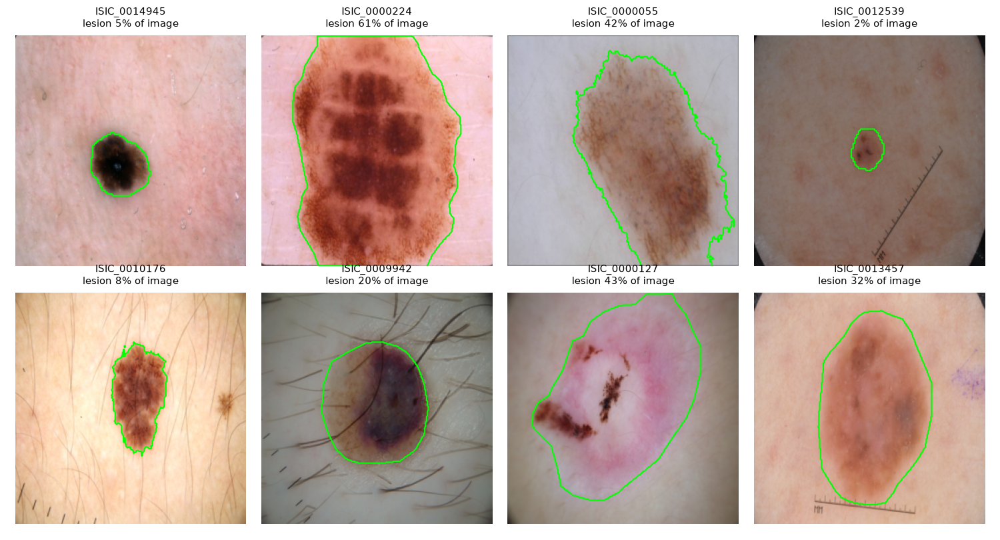
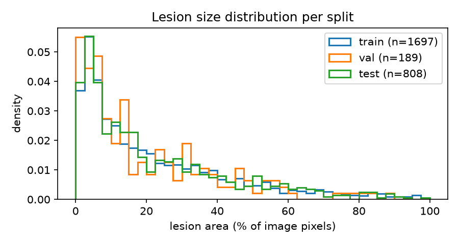
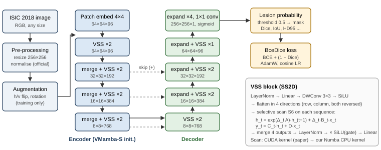
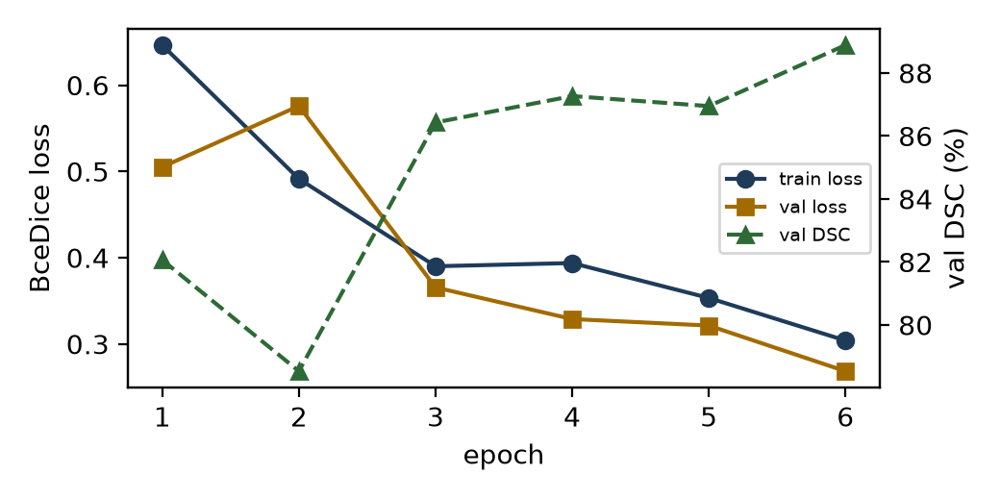
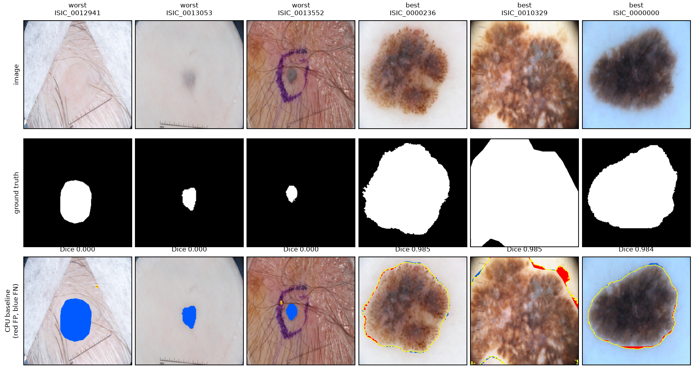

| Track | Track 2: research paper extension |
| Group | {{NAME}} (matric {{MATRIC}}), group representative, solo group |
| GitHub | {{REPO}} (tag progress-v1) |
| Paper | J. Ruan, J. Li, S. Xiang, “VM-UNet: Vision Mamba UNet for Medical Image Segmentation”, arXiv:2402.02491, 2024 [1]. Official code: github.com/JCruan519/VM-UNet |
Melanoma is the deadliest common skin cancer, and it is far more treatable when found early. Dermoscopy images let a clinician see a lesion's colour and structure, and an accurate outline of the lesion (segmentation) is the first step of most computer-aided screening systems: shape, border irregularity and size are all measured from it. The task is hard because lesion borders are often fuzzy and low in contrast, and images contain hair, ruler marks, ink and dark lens corners.
VM-UNet [1] is a U-shaped segmentation network built entirely from Visual State Space (VSS) blocks, taken from VMamba [3]. CNNs see only a local window, and Transformers see the whole image but cost grows quadratically with the number of pixels. Mamba's selective state space model (S6) [2] instead scans the image as a sequence, with input-dependent parameters, in linear time, so every pixel can still be influenced by the whole image. VM-UNet scans each feature map in four directions and reports a DSC of 89.71% on ISIC 2018 with 27.43 M parameters.
Status at this report. The official code needs an NVIDIA GPU, because the Mamba scan is a CUDA kernel (mamba_ssm). The only machine available has an AMD GPU, so I rewrote the scan for the CPU (Section 3.3), checked it against a reference implementation, and trained and evaluated the baseline on the CPU. The dataset is prepared and analysed, and the extension is designed from the baseline's errors.
ISIC 2018 Challenge, Task 1: lesion boundary segmentation [4], with images from HAM10000 [5] and other ISIC archive sources; downloaded from the official challenge site (challenge.isic-archive.com/data), licence CC-0. I use the official training set (2,594 images) and validation set (100 images): {{N_IMG}} images in total, the same number as the paper. Each image is an RGB dermoscopy JPEG with one binary PNG mask (lesion = 255, background = 0), so there are two pixel classes. The originals come in {{N_SIZES}} different sizes, from {{W_MIN}}–{{W_MAX}} px wide and {{H_MIN}}–{{H_MAX}} px high; the most common is {{TOP_SIZE}} ({{TOP_SIZE_N}} images).
| Split | Images | Purpose |
|---|---|---|
| Train | {{N_TRAIN}} | training |
| Validation | {{N_VAL}} | choosing the checkpoint (lowest validation loss) |
| Test | {{N_TEST}} | used once, for the reported results |
The paper splits 7:3 (1,886 train / 808 test), but its split is only available on Baidu Pan, which I could not access. I made my own random split with a fixed seed (42): 30% test (808, the same size as the paper's), and 10% of the remaining 1,886 as a validation set. The official code chooses its best checkpoint on the test set, which inflates test scores; a separate validation set avoids that. The exact image IDs per split are in data/isic18/splits.csv.
scripts/prepare_isic18.py).
Class imbalance. Lesion pixels are {{LES_SHARE}}% of all pixels, so the task is not extremely imbalanced overall, but lesion size varies a lot: the median lesion covers {{LES_MED}}% of the image, {{SMALL}} images have a lesion under 5%, and {{LARGE}} have one over 70% ({{FULL}} cover over 95%, where the border runs off the image). Mean lesion share is {{LES_TR}}% / {{LES_VA}}% / {{LES_TE}}% in train / val / test, so the random split is balanced.
Quality issues and limitations. Hair, ruler markings, ink circles, gel bubbles, colour-calibration patches and dark vignette corners all appear (Figure 1). Images come from several clinics and devices, so colour and lighting vary. Resizing every image to a square changes the aspect ratio of almost all of them (the common 4:3 and 3:2 photos are squeezed to 1:1), and the large camera images (up to 6748 px wide) lose fine border detail. The masks were drawn by different annotators, some as smooth polygons and some tracing fine detail, which limits how high any model's Dice can go at the border.

Given a dermoscopy image, predict a binary mask of the lesion. VM-UNet already outlines most lesions well, but {{B_BORDER}}% of its wrong pixels are within {{BAND}} px of the lesion border (Section 4.3), which is exactly the part used to judge border irregularity, and a few faint lesions are missed entirely. The goal is to make the border more accurate and reduce these misses without simply making the model bigger.

A 4×4 patch embedding turns the 256×256 image into a 64×64×96 feature map. Four encoder stages ([2,2,2,2] VSS blocks, with patch merging between them) halve the resolution and double the channels down to 8×8×768. The decoder ([2,2,2,1] blocks) mirrors it with patch expanding, adds the encoder skip features, and a final 4× expand plus a 1×1 convolution gives a lesion probability per pixel. Inside each VSS block, SS2D flattens the feature map in four directions and runs the selective scan on each sequence. Training uses the official settings: BceDice loss (BCE + Dice, weights 1:1), AdamW (lr 10−3, weight decay 0.01) and cosine annealing to 10−5.
| Paper [1] | This baseline | |
|---|---|---|
| Hardware | 1× NVIDIA RTX A6000 (CUDA scan) | Intel i7-8700 CPU, 12 threads (our Numba scan) |
| Epochs / batch | 300 / 32 | {{EPOCHS}} / 8 (about {{MIN_PER_EP}} min per epoch) |
| LR schedule | cosine, Tmax = 50 | cosine, Tmax = number of epochs |
| Checkpoint chosen on | test set | separate validation set |
| Init., loss, augmentation | identical (VMamba-S ImageNet weights, BceDice, flips + rotation) | |
The only CUDA-dependent function is selective_scan_fn, which computes ht = exp(ΔtA)·ht−1 + ΔtBtxt, yt = Ct·ht + D·xt along each sequence. I rewrote it in Numba [10], with one CPU thread per channel and a hand-derived backward pass that recomputes the states instead of storing them (cpu_scan/selective_scan_cpu.py, about 150 lines). tests/test_scan.py compares its output and the gradients of all seven inputs with a plain PyTorch loop: the largest relative difference is below 10−6. Only this function changes; the rest of the model, the pretrained-weight mapping and the training settings are the official ones.
Each change is trained with the same split, epochs and seed as the baseline, then all of them together. None of them makes the model meaningfully bigger.
For comparison with the paper: mIoU, DSC, accuracy, specificity and sensitivity computed from one confusion matrix over all test pixels, exactly as in the official engine.py. For the border objective: per-image Dice and IoU (mean), HD95 in pixels, and the border-error share, the fraction of wrong pixels within {{BAND}} px of the true border. Improvements will be checked with a Wilcoxon signed-rank test on per-image Dice.
| Model (ISIC 2018) | mIoU | DSC | Acc | Spe | Sen | Note |
|---|
The CPU baseline was trained for {{EPOCHS}} epochs (best validation loss at epoch {{BEST_EP}}). On the 808 test images it reaches DSC {{B_DSC}}% and mIoU {{B_MIOU}}%, only {{GAP}} DSC points below the paper's 300-epoch result. Accuracy and specificity are slightly above the paper, and sensitivity ({{B_SEN}}%) is lower: the short-trained model is conservative and misses lesion pixels rather than adding background. I attribute the gap to (i) training length ({{EPOCHS}} instead of 300 epochs, at about {{MIN_PER_EP}} min per epoch on this CPU, and the validation loss was still falling, Figure 4), (ii) a different random split, (iii) batch size 8 instead of 32, and (iv) choosing the checkpoint on a validation set, whereas the paper's code selects it on the test set, which favours the paper's numbers.
I also ran the authors' released ISIC 2018 checkpoint through the same CPU code on our test split. It scores DSC {{A_DSC}}%, above the paper's 89.71%. This confirms that the CPU scan and the metric code reproduce the authors' model, but the number is optimistic and is not a fair comparison: the authors' split is unknown, so roughly 70% of our test images were probably in their training set. Our own baseline is the reference for the extension.

| Model | mean Dice | median Dice | HD95 (px) | images with Dice < 0.7 | wrong pixels within {{BAND}} px of border |
|---|---|---|---|---|---|
| Our CPU baseline | {{B_DMEAN}} | {{B_DMED}} | {{B_HD}} | {{B_LOW}} / {{N_TEST}} | {{B_BORDER}}% |
| Authors' checkpoint | {{A_DMEAN}} | {{A_DMED}} | {{A_HD}} | {{A_LOW}} / {{N_TEST}} | {{A_BORDER}}% |
CPU inference takes {{SEC_IMG}} s per image.

Discussion. The best results (Dice ≈ 0.98) are large, well-defined lesions, where the predicted border follows the ground truth within a pixel or two. In one of them (ISIC_0010329) the remaining red error is where the annotator drew a coarse straight-edged polygon, which shows the label noise noted in Section 2.4. The worst results are complete misses (Dice 0): small, faint lesions that are barely darker than the skin, here combined with a purple ink ring, heavy hair or a ruler. The model predicts no lesion at all, which matches the lower sensitivity above. {{B_LOW}} of {{N_TEST}} test images score below 0.7 Dice. Across all images, {{B_BORDER}}% of wrong pixels lie within {{BAND}} px of the true border, and the HD95 is {{B_HD}} px. So most of the error is a band along the border, and a smaller number of hard, low-contrast cases fail completely. The first supports the boundary-weighted loss (Section 3.4, item 1). The second supports gated skip connections that suppress ink, hair and ruler responses (item 2), and I will also check whether a rotation fix and longer training recover faint lesions.
| Week | Tasks (all by {{NAME}}, solo group) | Output |
|---|---|---|
| 9 (30 Nov – 4 Dec) | Continue baseline training to more epochs (overnight CPU runs); try the official CUDA code on Colab Pro to measure the effect of training length; implement the boundary-weighted loss. | longer baseline; loss code + unit test |
| 10 (7 – 11 Dec) | Train and evaluate extension 1 (boundary loss); tune α, σ on the validation set. | Dice / HD95 vs baseline |
| 11 (14 – 18 Dec) | Implement attention-gated skips (extension 2) and the per-sample rotation fix (3); train both. | results for 2 and 3 |
| 12 (21 – 25 Dec) | Combine the best changes; ablation table; Wilcoxon test on per-image Dice. | final model, ablation |
| 13 (28 Dec – 1 Jan) | Error analysis by lesion size and artefact type; qualitative figures; start the final report. | figures, draft report |
| 14 (4 – 8 Jan) | Final report, slides and presentation; tag the final release on GitHub. | final submission |
Risks. CPU training time limits how many runs fit; mitigated by using Colab Pro for long runs and keeping the same epoch budget for every compared model.
| Name | Matric no. | Main tasks so far | Share (%) | Signature & date |
|---|---|---|---|---|
| {{NAME}} | {{MATRIC}} | Paper selection; CPU selective-scan port and tests; data preparation and EDA; baseline training and evaluation; extension design; GitHub repository; report | 100 | 27 November 2026 |
What was reused and what was written. Reused: the official VM-UNet code (model, losses, augmentations, normalisation, pretrained-weight mapping) and the VMamba-S ImageNet weights, the authors' released ISIC 2018 checkpoint (evaluation only) and the ISIC 2018 data. Written for this project: the CPU selective scan and its test, the restricted checkpoint loader, the data preparation, EDA, CPU training and evaluation scripts, and this report.
AI tool declaration. Claude (Anthropic) was used to help write the CPU scan, the scripts and drafts of this report. I ran all code locally, and the scan is verified against a reference implementation (tests/test_scan.py). I can explain every part of the work.